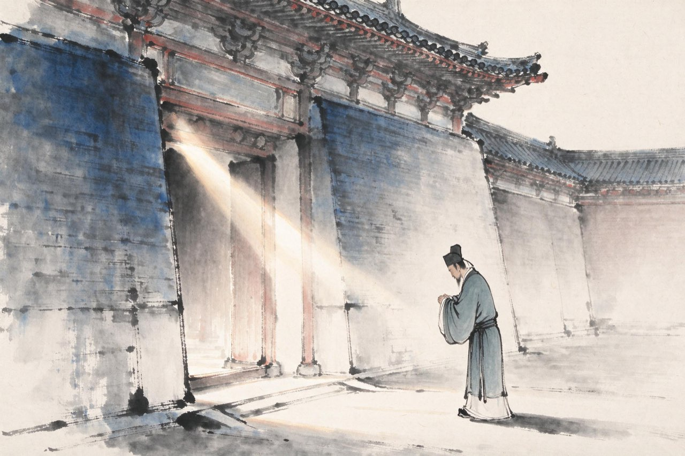
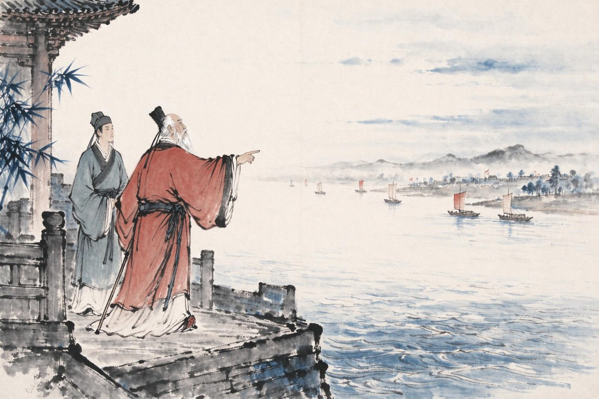

陆游 · 1158-1167
江淮
力说用兵

十年宦游
秦桧死后第三年，三十四岁的你终于得官：福州宁德县主簿，从九品，管文书。
次年调福州，决曹，理刑名。闽中的案卷一卷卷过手，离中原的战事很远。又两年，你被调入临安，做敕令所删定官——编定法令条文。京官清要，你却总觉得隔着什么：你读了一辈子的兵书，庙堂用不上。
绍兴三十二年，高宗禅位，孝宗即位。新皇帝锐意恢复，史浩、黄祖舜荐你「善词章，谙典故」。召见那天，孝宗说：游力学有闻，言论剀切——赐你进士出身。
被秦桧黜落的那口气，九年后，补上了。
注
- 赐进士出身在孝宗召见后，《宋史》本传不系月份，系年从年谱考订
- 宁德、福州、临安三任经历并见本场景，各任年份从年谱

符离之后
隆兴元年，张浚都督江淮军马，北伐。五月，宋军在符离溃败——恢复的大旗刚举起来就折了。
和议之声随即又起。隆兴二年春，朝廷再起张浚，奉诏视师江淮。老统帅沿江巡阅，驻节镇江——你恰好通判镇江府，登门谒见。
那一年张浚六十八岁，一生主战，罢而复起，起而复败。军帐之中他对你说的话，没有留下一字记载；你此后一生的方向，却在那次江城晤对里定下了——
同年冬，隆兴和议成。岁贡称侄，疆界如旧。你从镇江任上看着这一切发生。
注
- 张浚隆兴二年三月奉诏视师江淮，四月召还罢相，八月卒——晤对在其驻节镇江期间
- 晤对具体内容史无明文，正文不演绎
- 陆游晚年诗中屡忆张浚知遇，屡及镇江之谒
力说张浚用兵
和议既成，主战者成了罪名本身。
乾道二年，你在隆兴通判任上被弹劾，罪名是：交结台谏，鼓唱是非，力说张浚用兵。免职，归山阴。
你二十九岁锁厅试成名，四十二岁上被这句话逐出官场——而这句话里的每一件事，你到老都不认为做错了。张浚已死于前年秋天；现在，连「力说张浚用兵」的这个人，也被收拾干净了。
北伐失败的责任，最终落在几个说真话的人头上。你回山阴的路，走了很多天。镜湖的水照旧，家里的书楼照旧——四十岁的人，无官一身，前路茫茫。
注
- 弹劾罪名原文八字从《宋史》本传；免归后卜居镜湖三山
- 本页深色底：第一次政治黜落，理想被扼
罢官后的第一个村子，在镜湖边上。农家不嫌你是罢官的人，腊酒虽浑，鸡豚管够。春社将近，箫鼓喧喧，衣冠简朴，古风犹存。你在山路上走，山重了又重，水复了又复，正疑无路，眼前忽然一村，柳暗花明——
游山西村
莫笑农家腊酒浑，丰年留客足鸡豚。
山重水复疑无路，柳暗花明又一村。
箫鼓追随春社近，衣冠简朴古风存。
从今若许闲乘月，拄杖无时夜叩门。
注
- 「山重水复」二句后世传诵为绝境逢生的常语；此诗正作于罢官闲居之年，闲淡中自见生机
- 三山：镜湖中三座小山，陆游卜居其地，故宅世称三山别业